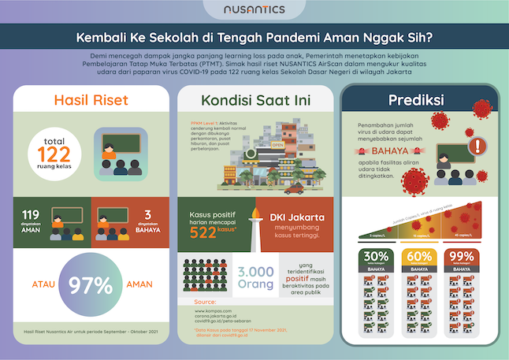

Layanan pengecekan virus COVID-19 di udara dari Nusantics Air Scan bantu mitigasi risiko klaster sekolah
Jakarta, 25 November 2021. Selama lebih dari satu tahun pandemi COVID-19, kegiatan sekolah berlangsung secara daring dan menimbulkan berbagai konsekuensi psikologis bukan hanya kepada anak-anak dan tenaga pengajar, namun juga kepada orang tua. Bahkan efek jangka panjang menurut Hasil riset Organisasi untuk Kerjasama Ekonomi dan Pembangunan (OECD) menyatakan, tidak bersekolah secara tatap muka mengakibatkan anak kita akan berisiko kurang kompetitif saat menghadapi dunia kerja dan potensi pengurangan pendapatan hingga -3% seumur hidup. Menilik dampak negatif dari ditutupnya sekolah, tercatat ada 175 negara di dunia yang telah membuka sekolah, baik sebagian maupun seluruhnya.
Sejalan dengan berjalannya program vaksinasi nasional kepada tenaga pengajar dan untuk meminimalkan learning loss serta dampak psikologis yang bisa berakibat permanen, Pemerintah melalui Kementerian Pendidikan, Kebudayaan, Riset dan Teknologi (Kemdikbud Ristek) telah memulai kegiatan Pembelajaran Tatap Muka (PTM) dengan persyaratan khusus.
Dalam konferensi pers yang diselenggarakan Nusantics secara daring pada 25 November 2021, sebagai keynote speaker Gita Wirjawan menyampaikan, “Pada situasi penuh tantangan saat ini, kebijakan PTM harus didukung untuk menyiapkan generasi muda untuk kepentingan jangka panjang. Namun harus tetap dilakukan dengan prinsip kepekaan, kehati-hatian, dan juga penuh kebijaksanaan dari berbagai pihak, mengingat kondisi setiap wilayah khususnya di kota besar dan kecil sangat berbeda.”
Sejalan dengan gagasan yang disampaikan oleh Pak Gita Wirjawan, Psikolog klinis anak Roslina Verauli, M.Psi.,Psi. mengatakan, “Dalam situasi dilematis saat ini, orang tua butuh menunjukkan bahwa mereka memahami kebutuhan dan kekhawatiran anak untuk kembali ke sekolah, serta bertemu dengan teman-teman untuk menjalin relasi sosial. Orang tua juga harus memastikan dapat hadir dan memberikan dukungan dengan melibatkan teknik positive parenting.”
“Kembali ke Sekolah” bersama Nusantics
Dalam rangka membantu meningkatkan kepercayaan orangtua, tenaga pengajar, serta para siswa untuk melakukan PTM dengan aman dan nyaman, Nusantics selaku perusahaan bioteknologi meluncurkan kampanye dan kegiatan nasional “Kembali ke Sekolah” bersama Nusantics.
Melalui kapabilitas utama dalam hal teknologi dan riset berbasis mikrobioma, Nusantics memberikan solusi komprehensif yang terdiri dari surveilans pada warga sekolah dengan PCR gargle (kumur) yang nyaman bagi anak, serta pemeriksaan kandungan virus dan sirkulasi udara di ruang kelas dengan layanan Air Scan.
Hasil penelitian pro-bono Nusantics pada 121 ruang kelas pada SDN di Jakarta menyatakan bahwa, 119 ruang kelas terdeteksi aman pada periode sample September hingga Oktober 2021. Co-founder dan CEO Nusantics mengatakan, “Kami menyadari ini adalah situasi yang dilematis, namun demi kebaikan jangka panjang dari sisi intelektualitas dan psikologis, PTM harus dilakukan dengan hati-hati. Oleh karena itu, deteksi virus COVID-19 di udara dengan metode PCR dan pengukuran sirkulasi udara sangat penting dilakukan untuk memitigasi risiko penularan dan menentukan langkah strategis dalam memastikan keamanan ruangan kelas dan lingkungan sekolah."

Kolaborasi Nasional
Penelitian ini merupakan bagian dari visi dan misi Nusantics untuk menggunakan kemampuan dalam bidang bioteknologi untuk kebaikan masyarakat luas. Melihat sambutan yang sangat positif dari pihak sekolah dan Kemendikbud Ristek, Nusantics memutuskan untuk membawa kegiatan ini ke skala nasional agar seluruh anak di Indonesia dapat kembali bersekolah dengan aman dan nyaman, serta mendapatkan keadilan dalam memperoleh akses pendidikan.
Nusantics mengundang semua pihak untuk berkolaborasi dalam kegiatan nasional Kembali ke Sekolah ini. Karena kondisi pendidikan yang terjadi saat ini berdampak bagi generasi masa depan dan Indonesia memerlukan sumber daya manusia yang tangguh sebagai modal dasar kemajuan serta meningkatkan daya saing bangsa di tengah kompetisi global yang terus meningkat.
“Kami percaya bahwa pendidikan adalah tanggung jawab kita bersama, termasuk pihak swasta, baik domestik maupun asing, karena sama-sama memerlukan sumber daya manusia yang unggul. Maka, mari kita berkolaborasi dan bergandengan tangan memastikan sekolah aman untuk semua,” tutup Sharlin.
Tentang Nusantics
Nusantics adalah perusahaan bioteknologi yang berdiri pada 2020 dengan visi menjaga biodiversitas demi masa depan alam dan manusia yang lebih sustainable. Melalui kapabilitas utama di bidang riset dan teknologi microbiome, Nusantics menjadi startup lokal pertama yang menghadirkan layanan Biome Scan, analisa microbiome kulit wajah di Indonesia. Dengan teknologi yang sama, Nusantics juga dipercaya oleh BPPT untuk merancang desain utama purwarupa qPCR test kit COVID-19 berbasis strain virus lokal dan tergabung dalam gugus tugas penanggulangan pandemi. Baru-baru ini, Nusantics berhasil membuat PCR test kit dengan metode gargle atau kumur yang kini diproduksi oleh Biofarma dan mendapat izin edar dari Kemenkes
Informasi lebih lanjut tentang Nusantics tersedia di https://www.nusantics.com/